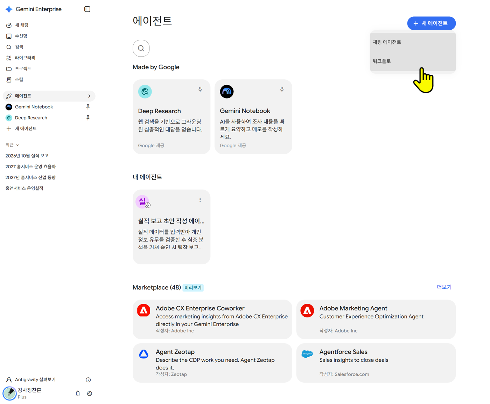
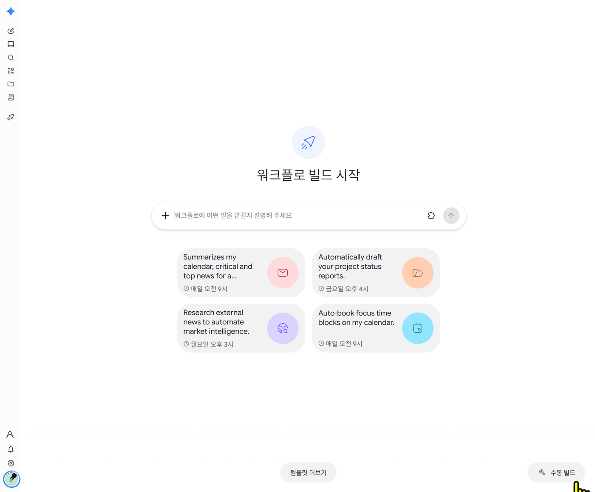
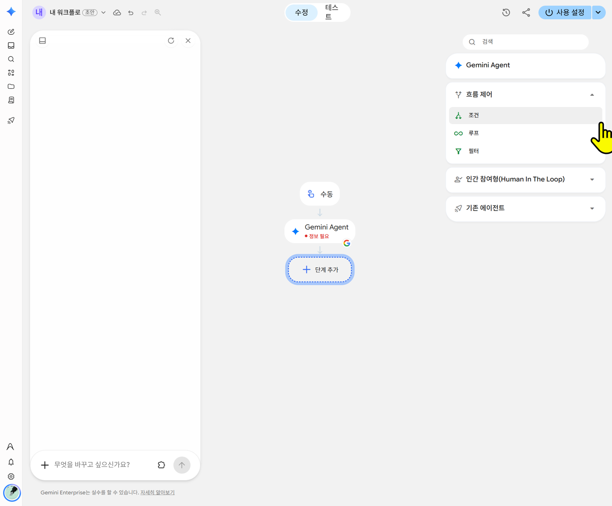
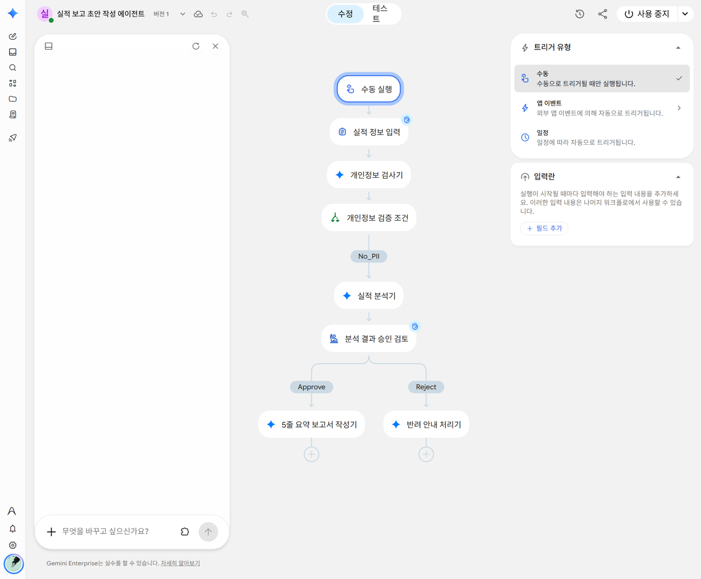
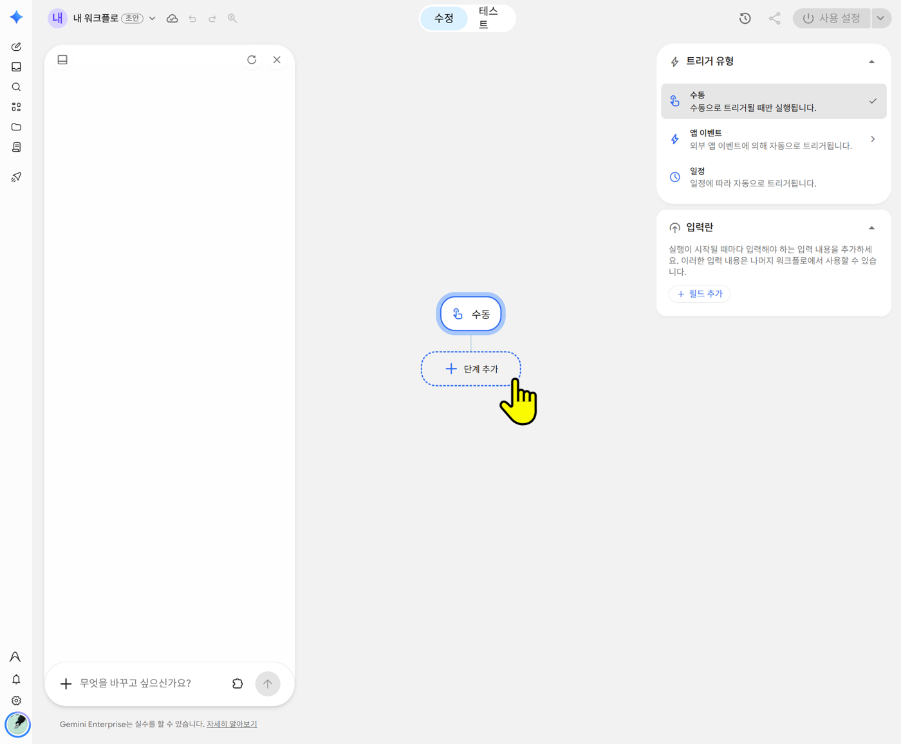

개요
| 에이전트 | 워크플로 | |
|---|---|---|
| 일하는 방식 | 대화하면서 그때그때 판단 | 미리 정한 단계를 차례로 실행 |
| 사람의 역할 | 계속 대화 | 처음에 입력, 중간에 승인·답변 |
| 어울리는 일 | 질문·상담·초안 다듬기 | 매번 같은 순서로 하는 반복 업무 |
🔧 메뉴가 안 보이면
워크플로 메뉴는 관리자가 워크플로 기능을 켜야 보입니다. 메뉴가 없으면 회사 담당자에게 문의하세요. 쓸 수 있는 도구와 데이터도 관리자가 연결해 준 것뿐입니다. 그래서 이 실습은 외부 연결 없이 "입력 → AI → 승인 → AI" 형태로 만듭니다.
들어가는 길
왼쪽 + 새 에이전트 오른쪽 화살표(>) → 워크플로. 또는 에이전트 화면 오른쪽 위 + 새 에이전트 → 워크플로.

워크플로 빌드 시작 화면이 열립니다. 여기서 세 가지 방법 중 하나를 고릅니다.

| 방법 | 누르는 곳 | 언제 |
|---|---|---|
| 말로 만들기 | 가운데 입력칸에 하고 싶은 일을 문장으로 입력 | 처음 만들 때 |
| 템플릿 | 아래쪽 템플릿 더보기 | 예시를 보고 싶을 때 |
| 직접 조립 | 오른쪽 아래 수동 빌드 → 단계 추가 | 단계를 하나씩 손볼 때 |
단계 종류
단계 추가를 누르면 오른쪽에 단계 목록이 나옵니다.

| 단계 | 하는 일 |
|---|---|
| 입력란 (필드 추가) | 실행할 때 사람이 채우는 칸. 수동 트리거를 누르면 오른쪽에 나옵니다 |
| Gemini Agent | 지침대로 읽고 판단해 답하는 AI 단계 |
| 흐름 제어 → 조건 · 루프 · 필터 | 조건에 따라 길 나누기 · 목록 1건씩 반복 · 조건에 맞는 것만 남기기 |
| 인간 참여형(Human In The Loop) | 사람이 승인하거나 답해야 다음으로 넘어감 |
| 기존 에이전트 | 이미 만든 에이전트에게 일을 넘김 |
승인 단계를 넣으면 Approve(승인)와 Reject(반려) 두 갈래가 생깁니다. 다음 단계는 갈래마다 따로 붙입니다.
⚠️ 스킬은 단계에서 바로 부르지 않습니다
워크플로 단계에서 스킬(/performance-report 등)을 부르는 기능은 안내되어 있지 않습니다. 스킬에 넣었던 규칙은 Gemini Agent 단계의 지침에 글로 직접 넣습니다.
실습: 실적 보고 초안 워크플로
① 만들기. 워크플로 빌드 시작 화면의 입력칸에 아래를 붙여넣습니다.
실적 보고 초안 워크플로를 만들어줘. 1) 실행할 때 '보고 기간'과 '실적 표(붙여넣기)'를 입력받는다. 2) AI가 목표 대비, 전월 대비, 튀는 값, 원인 후보 순서로 분석한다. 3) 분석 결과를 내가 확인하고 승인한다. 4) 승인하면 팀장 보고용 5줄 요약을 쓴다. 고객 개인정보가 보이면 바로 멈춘다.
② 확인. 아래처럼 단계가 만들어집니다. 개인정보 검사와 조건 단계까지 알아서 넣어 주기도 합니다. 다르면 단계를 눌러 고치거나, 왼쪽 입력칸에 "무엇을 바꾸고 싶은지" 말로 적습니다.

③ 시험. 위쪽 테스트 탭에서 실습 엑셀의 표(고객 정보 없는 것)로 실행해 봅니다.
④ 켜기. 오른쪽 위 사용 설정을 누릅니다.
⑤ 실행. 채팅창에 @워크플로이름을 입력해 부릅니다.
과제: 직접 조립하기 — 외부 공개 전 점검
이번에는 말로 만들지 않고 단계를 하나씩 직접 넣어 봅니다. 보도자료·홍보 글·고객 안내문처럼 밖으로 나가는 글에 들어가면 안 되는 정보가 있는지 점검하고, 그 부분만 고치는 워크플로입니다.
| 순서 | 단계 | 하는 일 |
|---|---|---|
| 1 | 입력란 | 공개할 글을 붙여넣는 칸 |
| 2 | Gemini Agent | 공개하면 안 되는 부분을 찾아 목록으로 |
| 3 | 인간 참여형 (승인) | 내가 목록을 확인하고 승인 |
| 4 | Gemini Agent (Approve 쪽) | 찾은 부분만 고친 공개용 글 |
1단계. 빈 워크플로 열기. + 새 에이전트 > → 워크플로 → 오른쪽 아래 수동 빌드

2단계. 입력란 만들기. 가운데 수동을 누르고, 오른쪽 입력란 → 필드 추가로 칸을 하나 만들어 이름을 공개할 글로 적습니다.
3단계. 점검 단계 넣기. 단계 추가 → Gemini Agent를 고르고 지침 칸에 아래를 붙여넣습니다.
너는 외부 공개 전 점검 담당이다. 입력된 '공개할 글'을 읽고, 밖에 공개되면 안 되는 부분을 모두 찾는다. 찾을 것: 1) 고객 개인정보: 이름, 전화번호, 주소, 계약번호 2) 사내 실적 숫자: 처리 건수, 처리율, 목표 달성 여부 등 공개되지 않은 수치 3) 사내 시스템·조직 정보: 내부 시스템 이름, 내부 담당자 이름과 연락처 결과는 표로 쓴다: 찾은 문장 / 종류 / 이유 / 고칠 방향. 찾은 것이 없으면 "공개 금지 정보 없음"이라고만 쓴다. 글을 고쳐 쓰지는 않는다.
4단계. 승인 단계 넣기. 단계 추가 → 인간 참여형(Human In The Loop) 안의 승인 단계를 고릅니다. Approve와 Reject 두 갈래가 생깁니다.
5단계. 고치는 단계 넣기. Approve 갈래 아래 +를 눌러 Gemini Agent를 고르고, 지침 칸에 아래를 붙여넣습니다.
앞 단계의 점검 표에 나온 부분만 고쳐 공개용 글을 만든다. - 고객 개인정보는 지운다. - 사내 실적 숫자는 "크게 개선" 같은 표현으로 바꾸거나 지운다. - 사내 시스템·담당자 정보는 지운다. - 점검 표에 없는 문장은 한 글자도 바꾸지 않는다. 마지막에 고친 문장 수를 한 줄로 알린다.
6단계. 시험하기. 위쪽 테스트 탭에서 아래 가상 글을 공개할 글에 넣고 실행합니다. 승인 단계에서 멈추면 점검 표를 보고 승인합니다.
[보도자료 초안] 홈앤서비스, 강원 권역 AS 당일처리 강화 홈앤서비스는 11월부터 강원 권역의 AS 당일처리를 강화한다. 10월 강원 권역 AS 처리 건수는 사내 집계 기준 2만 1천 건, 당일처리율 93.4%로 목표를 달성했다. 춘천센터 고객 홍길동(010-0000-0000) 씨는 "공유기 고장이 당일에 해결됐다"고 말했다. 현장 기사는 사내 AS관리시스템으로 출동 일정을 받는다. 문의: 운영기획팀 김대리(내선 0000)
점검 표에 고객 이름·전화번호, 실적 숫자 2개, 시스템 이름, 담당자 연락처가 잡히면 성공입니다.
7단계. 켜고 쓰기. 오른쪽 위 사용 설정을 누른 뒤, 채팅창에서 @워크플로이름으로 실행합니다.
🖱️ 앞 단계 결과 연결
앞 단계의 결과를 다음 단계로 넘기는 방법이 화면에 따로 보이면 그 안내를 따릅니다. 잘 안 되면 왼쪽 입력칸에 "점검 표를 다음 단계에 넘겨줘"처럼 말로 고쳐 달라고 해 봅니다.
실행 시점 고르기 (트리거)
| 트리거 | 실행 시점 |
|---|---|
| 수동 | 채팅창에서 @워크플로이름으로 부를 때 |
| 앱 이벤트 | 연결된 외부 앱에 일이 생길 때 |
| 일정 | 정해진 주기마다 |
앱 이벤트와 일정은 관리자가 연결한 데이터가 있어야 쓸 수 있습니다. 이 실습은 수동만 씁니다.